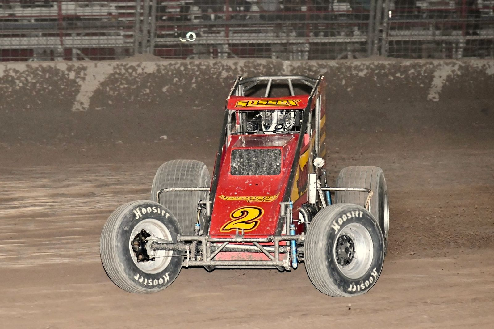

Stevie Sussex Wins USAC Southwest Sprint Car Feature at Central Arizona Raceway
Sussex started seventh in the Jack Yeley-owned No. 2 and passed Charles Davis Jr. for the lead on lap 17 at Casa Grande, Ariz., on Saturday, Nov. 14.

Stevie Sussex won the 25-lap USAC Avanti Windows & Doors Southwest Sprint Car feature at Central Arizona Raceway in Casa Grande, Arizona, on Saturday, Nov. 14, according to USAC. It was his fourth series win of 2026 and the 17th of his career, which USAC said ranks third on the series’ all-time list. The Tempe, Arizona, driver started seventh in the No. 2 owned by Jack Yeley.
Davis led the opening lap before A.J. Hernandez took the lead on lap 2 and led through lap 6, according to the official lap leaders. Davis, the series’ second all-time winningest driver, took the lead back on lap 7. Sussex passed him on lap 17 and led the final nine laps. Davis finished second, point leader R.J. Johnson third, Cameron La Rose fourth and Dayton Shelton fifth after starting 11th. Connor Lundy, Jordan Stetson, Mickey Gile, Bruce St. James and Hernandez completed the top 10 in the 13-car field.
St. James set fast time at 15.850 seconds, two-thousandths of a second ahead of La Rose, USAC said. Davis and Sussex won the two eight-lap heat races. Jonas Reynolds flipped in the first heat and Bryan Ledbetter Jr. flipped in the second heat, according to the official results.
Johnson leads the USAC Southwest Sprint Car standings with 1,128 points, 217 ahead of Shelton (911). St. James is third with 842, Daylin Perreira fourth with 835 and Koen Crawford fifth with 811. Sussex is seventh with 769. The series returns to Central Arizona Raceway on Nov. 20-21, according to USAC.